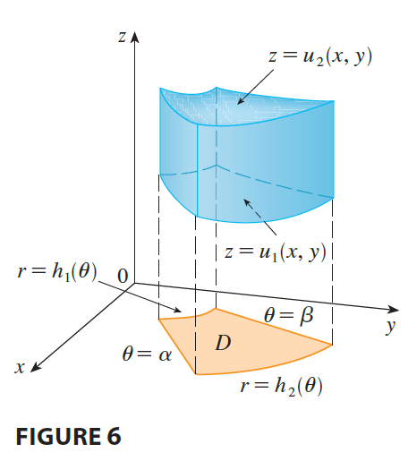
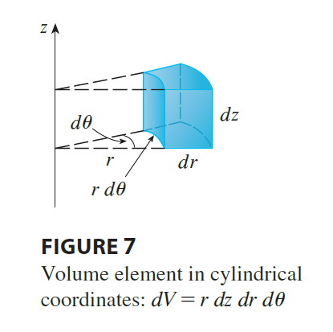
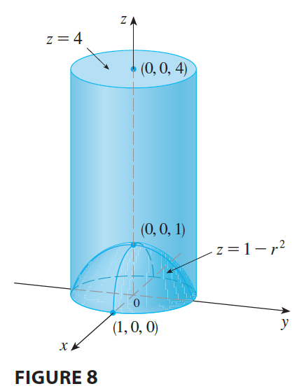

Suppose that E is a type 1 region whose projection D onto the xy-plane is conveniently described in polar coordinates (see Figure 6).

In particular, suppose that f is continuous and \[ E = \{(x, y, z) | (x, y) \in D, u_1(x, y) \le z \le u_2(x, y)\} \] where D is given in polar coordinates by \[ D = \{(r, \theta) | \alpha \le \theta \le \beta, h_1(\theta) \le r \le h_2(\theta)\} \] We know from Equation 15.6.6 that
\[ \iiint_E f(x, y, z) dV = \iint_D \left[ \int_{u_1(x,y)}^{u_2(x,y)} f(x, y, z) dz \right] dA \tag{3} \]
But we also know how to evaluate double integrals in polar coordinates. In fact, combining Equation 3 with Equation 15.3.3, we obtain
\[ \iiint_E f(x, y, z) dV = \int_\alpha^\beta \int_{h_1(\theta)}^{h_2(\theta)} \int_{u_1(r\cos\theta, r\sin\theta)}^{u_2(r\cos\theta, r\sin\theta)} f(r\cos\theta, r\sin\theta, z) r dz dr d\theta \tag{4} \]
Formula 4 is the formula for triple integration in cylindrical coordinates. It says that we convert a triple integral from rectangular to cylindrical coordinates by writing \(x = r\cos\theta\), \(y = r\sin\theta\), leaving z as it is, using the appropriate limits of integration for z, r, and \(\theta\), and replacing dV by \(r dz dr d\theta\). (Figure 7 shows how to remember this.) It is worthwhile to use this formula when E is a solid region easily described in cylindrical coordinates, and especially when the function \(f(x, y, z)\) involves the expression \(x^2 + y^2\).

EXAMPLE 3 A solid E lies within the cylinder \(x^2 + y^2 = 1\), below the plane \(z=4\), and above the paraboloid \(z = 1 - x^2 - y^2\). (See Figure 8.) The density at any point is proportional to its distance from the axis of the cylinder. Find the mass of E.

EXAMPLE 4 Evaluate \(\int_{-2}^2 \int_{-\sqrt{4-x^2}}^{\sqrt{4-x^2}} \int_{\sqrt{x^2+y^2}}^2 (x^2+y^2) dz dy dx\).